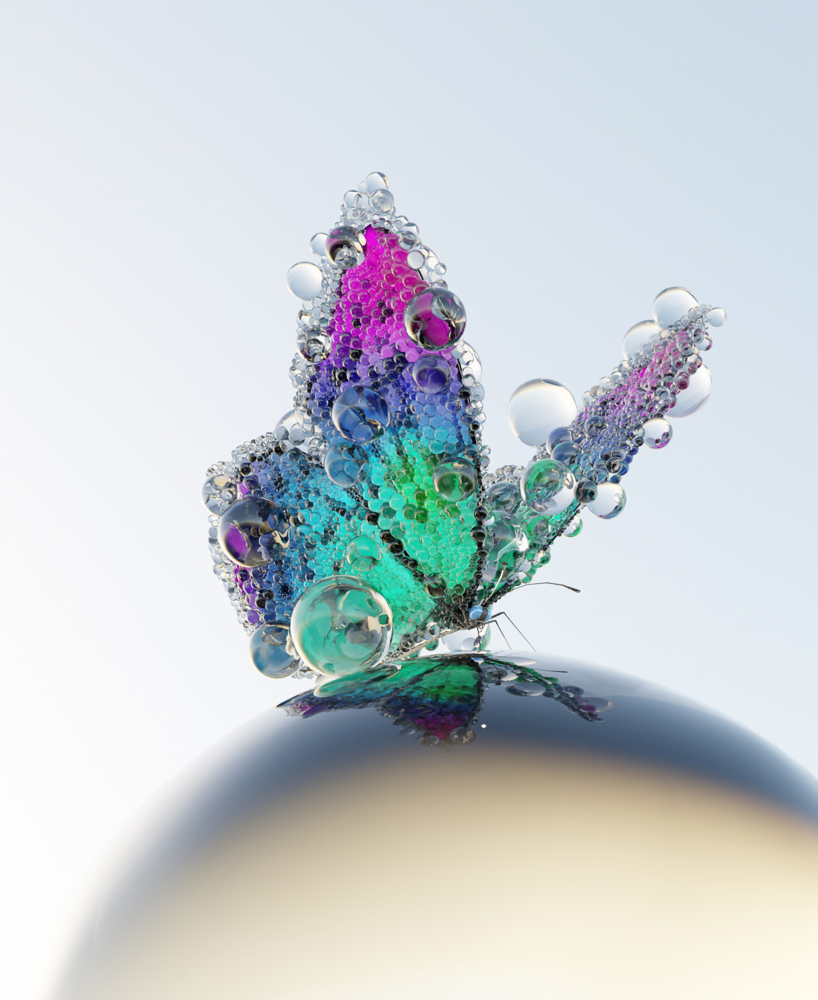
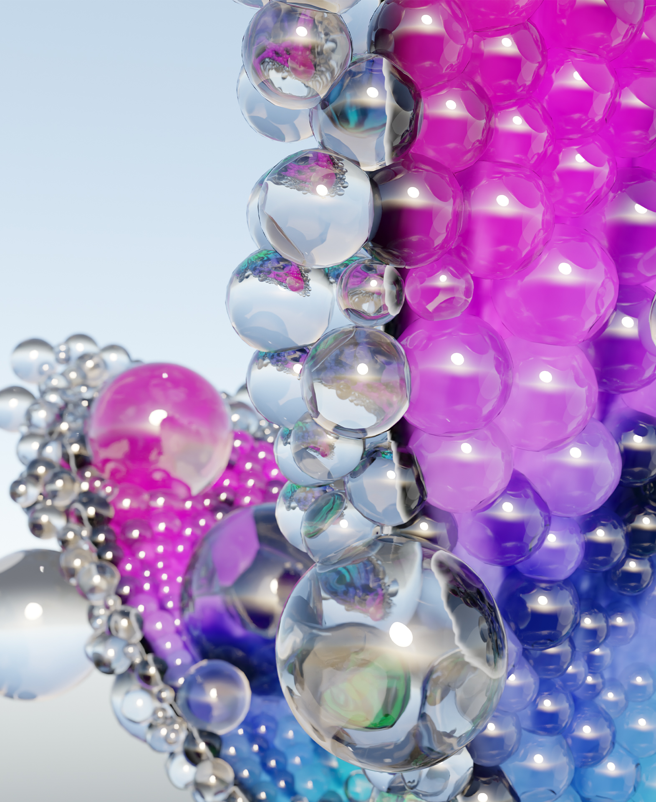
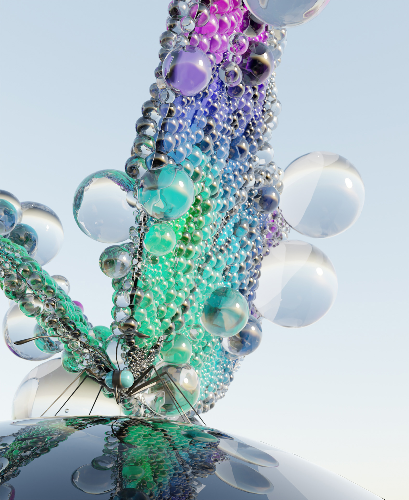

× close
SideFx Houdini - Experience



What?
We should build a work of art inspired by the artist Kohei Nawas with the help of generative design.
Method?
With the help of a series of tutorials from our professor and a basic file that we received from him, i created a butterfly covered with glass balls..